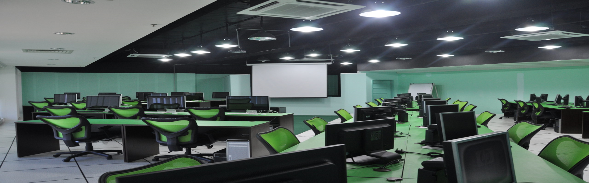

Faculty of Computing & Informatics UMS
UMS was established in 1994. UMS has three campuses: in Kota Kinabalu and Sandakan, Sabah and in the Federal Territory of Labuan.
Our faculty is provide with high-technology that follow industrial standard to make learning environment more conducive and expose students to working-like environment.
UMS under Faculty Computing and Informatics offers programs and courses to produce graduates who will specialize but balanced, competent, devoted and patriotic.
For more information regards to the academic of Universiti Malaysia Sabah, please contact :
Academic and Service Divisions,
Universiti Malaysia Sabah,
Tel : (+6088) 320000 Ext: 691259.
Website: http://bpa.ums.edu.my/
| Intake | Application Deadline | Decision |
|---|---|---|
| 1st Intake | February 25 - April 2 | |
| 2nd Intake |